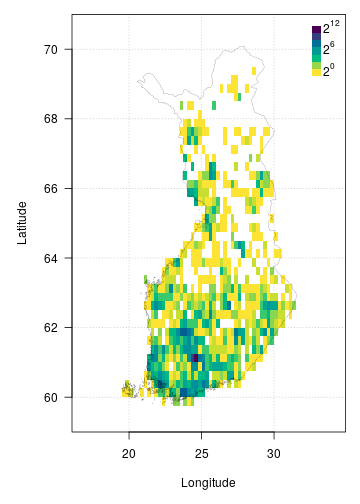

FinBIF aggregates Finnish biodiversity data from multiple sources in a single open access portal for researchers, citizen scientists, industry and government. FinBIF allows users of biodiversity information to find, access, combine and visualise data on Finnish plants, animals and microorganisms. The finbif R package makes the publicly available data in FinBIF easily accessible to programmers. Biodiversity information is available on taxonomy and taxon occurrence. Occurrence data can be filtered by taxon, time, location and other variables. The data accessed are conveniently preformatted for subsequent analyses.
You can install the current stable version of finbif from CRAN,
install.packages("finbif")You can also install the latest development version of finbif from GitHub,
remotes::install_github("luomus/finbif@dev")To use the FinBIF API you must first request and set a personal access token. You can request an API token to be sent to your email address with the function finbif_get_token().
finbif_request_token("your@email.com")Copy the access token that was sent to your email and set it as the environment variable FINBIF_ACCESS_TOKEN either for the current session,
Sys.setenv(
FINBIF_ACCESS_TOKEN = "xtmSOIxjPwq0pOMB1WvcZgFLU9QBklauOlonWl8K5oaLIx8RniJLrvcJU4v9H7Et"
)
# Note: the above is not a real access token. Do not try using it., or by adding it to a Renviron startup file (see here for details).
You can check to see if a taxon exists in the FinBIF database.
finbif_check_taxa("Ursus arctos")
#> [Ursus arctos] ID: MX.47348If the taxon is in the FinBIF database its unique ID is returned. When a taxon is not in the FinBIF database it is reported as “not found” and for that taxa the list element is NA.
(taxa <- finbif_check_taxa(c("Ursus arctos", "Moomin")))
#> [Ursus arctos] ID: MX.47348
#> [Moomin ] Not found
taxa[[1]]
#> Ursus arctos
#> "MX.47348"
taxa[[2]]
#> Moomin
#> NAYou can also specify the taxonomic rank when searching FinBIF and the search will be limited to the specified rank.
finbif_check_taxa(list(species = c("Ursus arctos", "Ursus"), genus = "Ursus"))
#> [species: Ursus arctos] ID: MX.47348
#> [species: Ursus ] Not found
#> [genus: Ursus ] ID: MX.51311The function finbif_taxa() can be used for a more general search for taxa in the FinBIF database. Searches can be exact, partial or likely (fuzzy matching). Information for a single taxon is returned when using exact or fuzzy matching, but multiple taxa, up to a limit, n, may be returned when using partial matching.
birch_search <- finbif_taxa("Betula pendula", 2, "partial")
birch_search$content
#> [[1]]
#> [[1]]$matchingName
#> [1] "Betula pendula var. pendula"
#>
#> [[1]]$nameType
#> [1] "MX.scientificName"
#>
#> [[1]]$id
#> [1] "MX.37994"
#>
#> [[1]]$scientificName
#> [1] "Betula pendula var. pendula"
#>
#> [[1]]$taxonRank
#> [1] "MX.variety"
#>
#> [[1]]$cursiveName
#> [1] TRUE
#>
#> [[1]]$finnish
#> [1] TRUE
#>
#> [[1]]$species
#> [1] TRUE
#>
#> [[1]]$vernacularName
#> [[1]]$vernacularName$fi
#> [1] "vihtakoivu"
#>
#> [[1]]$vernacularName$sv
#> [1] "vanlig vårtbjörk"
#>
#>
#> [[1]]$informalGroups
#> [[1]]$informalGroups[[1]]
#> [[1]]$informalGroups[[1]]$id
#> [1] "MVL.343"
#>
#> [[1]]$informalGroups[[1]]$name
#> [[1]]$informalGroups[[1]]$name$fi
#> [1] "Putkilokasvit"
#>
#> [[1]]$informalGroups[[1]]$name$sv
#> [1] "Kärlväxter"
#>
#> [[1]]$informalGroups[[1]]$name$en
#> [1] "Vascular plants"
#>
#>
#>
#>
#> [[1]]$type
#> [1] "partialMatches"
#>
#>
#> [[2]]
#> [[2]]$matchingName
#> [1] "Betula pendula var. carelica"
#>
#> [[2]]$nameType
#> [1] "MX.scientificName"
#>
#> [[2]]$id
#> [1] "MX.37997"
#>
#> [[2]]$scientificName
#> [1] "Betula pendula var. carelica"
#>
#> [[2]]$scientificNameAuthorship
#> [1] "(Merckl.) Hämet-Ahti"
#>
#> [[2]]$taxonRank
#> [1] "MX.variety"
#>
#> [[2]]$cursiveName
#> [1] TRUE
#>
#> [[2]]$finnish
#> [1] TRUE
#>
#> [[2]]$species
#> [1] TRUE
#>
#> [[2]]$vernacularName
#> [[2]]$vernacularName$fi
#> [1] "visakoivu"
#>
#> [[2]]$vernacularName$sv
#> [1] "masurbjörk"
#>
#>
#> [[2]]$informalGroups
#> [[2]]$informalGroups[[1]]
#> [[2]]$informalGroups[[1]]$id
#> [1] "MVL.343"
#>
#> [[2]]$informalGroups[[1]]$name
#> [[2]]$informalGroups[[1]]$name$fi
#> [1] "Putkilokasvit"
#>
#> [[2]]$informalGroups[[1]]$name$sv
#> [1] "Kärlväxter"
#>
#> [[2]]$informalGroups[[1]]$name$en
#> [1] "Vascular plants"
#>
#>
#>
#>
#> [[2]]$type
#> [1] "partialMatches"
#>
#> You can download occurrence data from the FinBIF database as a data.frame with the finbif_occurrence() function.
finbif_occurrence("Cygnus cygnus", n = 100)
#> Records downloaded: 100
#> Records available: 57008
#> A data.frame [100 x 12]
#> record_id scientific_name abundance lat_wgs84 lon_wgs84 date_time
#> 1 KE.176/5e9dd5782d0e… Cygnus cygnus 1 62.79256 30.96101 2020-04-20 12:00:00
#> 2 JX.1108556#265 Cygnus cygnus 2 64.2081 29.03035 2020-04-19 12:00:00
#> 3 JX.1110250#40 Cygnus cygnus 20 63.12255 24.32082 2020-04-19 05:00:00
#> 4 JX.1110117#3 Cygnus cygnus 2 65.87333 24.28142 2020-04-19 17:00:00
#> 5 JX.1110052#46 Cygnus cygnus 2 61.13841 21.64607 2020-04-19 06:35:00
#> 6 JX.1110024#10 Cygnus cygnus 2 60.32418 22.39303 2020-04-18 12:00:00
#> 7 JX.1110008#3 Cygnus cygnus 10 64.17427 25.9137 2020-04-17 12:00:00
#> 8 JX.1109958#52 Cygnus cygnus 2 61.32291 28.56818 2020-04-17 05:45:00
#> 9 JX.1109939#4 Cygnus cygnus 2 61.2604 28.71105 2020-04-17 12:27:00
#> 10 JX.1109952#4 Cygnus cygnus 4 61.2641 28.70687 2020-04-16 11:33:00
#> ...with 90 more records and 6 more variables:
#> coordinates_uncertainty, any_issues, requires_verification, requires_identification,
#> record_reliability, record_qualityYou can search for multiple taxa at once and filter the records with the filter argument.
finbif_occurrence(
"Cygnus cygnus",
"Cygnus olor",
filter = list(coordinates_uncertainty_max = 100)
)
#> Records downloaded: 10
#> Records available: 11553
#> A data.frame [10 x 12]
#> record_id scientific_name abundance lat_wgs84 lon_wgs84 date_time
#> 1 JX.1110624#19 Cygnus olor 2 60.13623 24.65125 2020-04-21 11:30:00
#> 2 JX.1110052#46 Cygnus cygnus 2 61.13841 21.64607 2020-04-19 06:35:00
#> 3 HR.3211/42456319-U Cygnus olor 1 60.17978 24.93999 2020-04-18 12:00:00
#> 4 JX.1109939#4 Cygnus cygnus 2 61.2604 28.71105 2020-04-17 12:27:00
#> 5 JX.1109826#13 Cygnus olor 2 60.79963 21.39606 2020-04-17 11:30:00
#> 6 JX.1109535#12 Cygnus cygnus 2 66.27089 29.3796 2020-04-15 12:00:00
#> 7 JX.1109515#4 Cygnus cygnus 1 65.01262 25.43289 2020-04-14 12:00:00
#> 8 JX.1109461#4 Cygnus cygnus 2 60.92088 26.38893 2020-04-14 12:00:00
#> 9 JX.1109294#76 Cygnus olor 2 60.42794 22.20052 2020-04-13 12:00:00
#> 10 JX.1109218#22 Cygnus cygnus 1 61.09307 21.55221 2020-04-13 06:45:00
#> ...with 0 more records and 6 more variables:
#> coordinates_uncertainty, any_issues, requires_verification, requires_identification,
#> record_reliability, record_qualitySee ?filters and vignette("v05_filtering") for more details on filtering FinBIF records.
It is possible to request a random sample of records instead of the last n records (or records ordered by some other variable).
finbif_occurrence("Birds", sample = TRUE)
#> Records downloaded: 10
#> Records available: 17833621
#> A data.frame [10 x 12]
#> record_id scientific_name abundance lat_wgs84 lon_wgs84 date_time
#> 1 JX.1027476#519 Fringilla coelebs 1 59.86154 23.16479 1997-06-10 07:20:00
#> 2 KE.67/11806345#Unit Corvus monedula 1 60.82859 24.25148 2000-01-01 12:00:00
#> 3 KE.383/4571#UNIT170 Passer montanus 6 63.05393 25.90933 2015-04-16 12:00:00
#> 4 MKH.20030914#593 Motacilla alba 133 59.81111 22.89545 2003-09-14 12:00:00
#> 5 MKH.20000726#566 Hirundininae 80 59.81111 22.89545 2000-07-26 12:00:00
#> 6 KE.67/8317861#Unit Phoenicurus phoenic… 1 59.83333 21.61667 2002-05-04 13:00:00
#> 7 MKH.20140510#553 Alauda arvensis 2 59.81111 22.89545 2014-05-10 12:00:00
#> 8 KE.67/5518966#Unit Aegithalos caudatus 1 59.81667 22.9 1996-10-11 18:00:00
#> 9 KE.67/3683617#Unit Acanthis hornemanni… 1 63.95 22.85 2013-10-25 18:00:00
#> 10 MHU.1732099 Strix uralensis 1 62.34485 27.10288 2006-04-19 12:00:00
#> ...with 0 more records and 6 more variables:
#> coordinates_uncertainty, any_issues, requires_verification, requires_identification,
#> record_reliability, record_qualityThe finbif package has a number of inbuilt functions for plotting (see e.g., breaks_xy() and hist_xy()). There is also an inbuilt dataset that can be used to plot the border of Finland (?finland_map). Together these utilities can be used to plot occurrences after they have been downloaded from FinBIF. For example, the following can be used to plot the density of Eurasian Jay occurrences from Finland.
# Download all the occurrences of Eurasian Jay in Finland
# that have coordinates accurate to at least 100m
jays <- finbif_occurrence(
taxa = "Eurasian Jay",
filter = c(
coordinates_uncertainty_max = 100,
country = "Finland"
),
n = 2e4,
quiet = TRUE
)
# Compute the density of occurrences in 1/4 degree cells and plot as a heatmap
with(
data = c(jays, finland_map),
expr = {
par(mar = c(5, 5, 1, 1), las = 1)
# compute a 2d histogram from the occurrences
breaks <- breaks_xy(bbox, .25) # breakpoints every 1/4 of a degree
density <- hist_xy(xy = list(lon_wgs84, lat_wgs84), breaks)
# plot the histogram as a heatmap
image(density,
asp = 2.4,
breaks = 2^seq(0, 12), # breakpoints for the gridcell colours
col = hcl.colors(12, rev = TRUE),
xlab = "Longitude",
ylab = "Latitude",
panel.first = grid())
legend("topright",
inset = c(0, .01),
legend = expression(2^12, "", "", 2^6, "", "", 2^0),
fill = hcl.colors(7),
border = NA,
bty = "n",
adj = c(0, 0.25),
x.intersp = .2,
y.intersp = .5)
# add the Finnish border
polygon(x = vertices, lwd = .2)
}
)